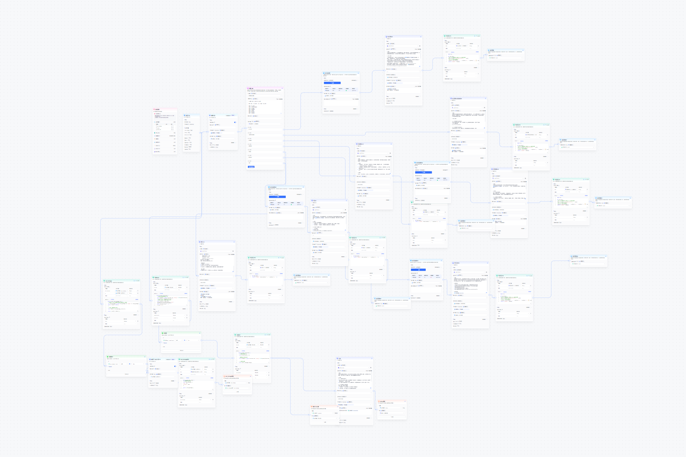

为多位不同专科医生定制 AI 助手。从科室调研到需求 / 流程 / 交互方案，基于 FastGPT 搭建智能体矩阵；建设专科知识库与 Prompt 策略，加入意图兜底与安全过滤，并接入企业微信患者端。沉淀标准化模板后，后续搭建周期约缩短 80%。
公开体验（部分）
以上为公开体验链接；生产环境已集成至企业微信。
对话界面

我做了什么
- 需求分析：专科科室调研，对接一线医生，梳理核心业务逻辑
- 知识工程：数据清洗与 Chunk 策略优化，RAG 检索精度提升至 90% 以上
- 工作流编排：FastGPT 多分支条件节点，覆盖医学 / 导诊 / 购药等能力
- 系统集成：封装企业微信中转服务，处理 Markdown 渲染兼容
工作流

亮点
- 多专科定制：知识库独立、工作流与回答策略按专科定制
- 企微深度集成：患者直接咨询，AI 自动承接常见问题，减轻医生接待负担
- 完整 RAG 链路：文档清洗 → 向量化 → 检索增强，回答有据可查
技术栈
- FastGPT 可视化编排 · RAG · 意图识别 · 多轮对话
- 医学知识库 · 企业微信 API